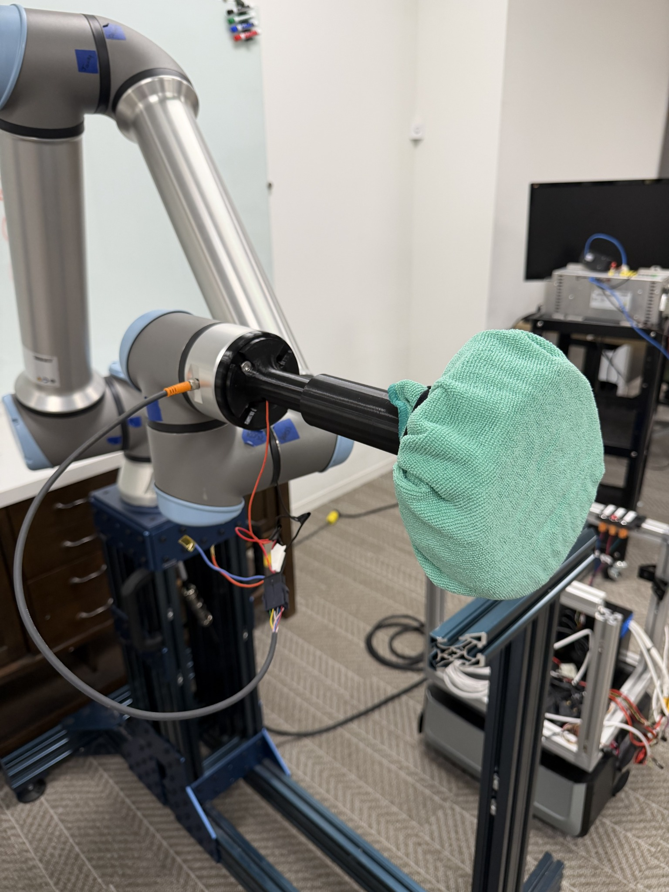
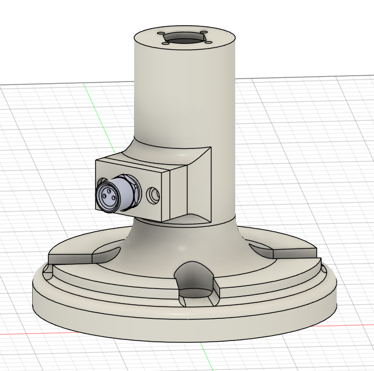
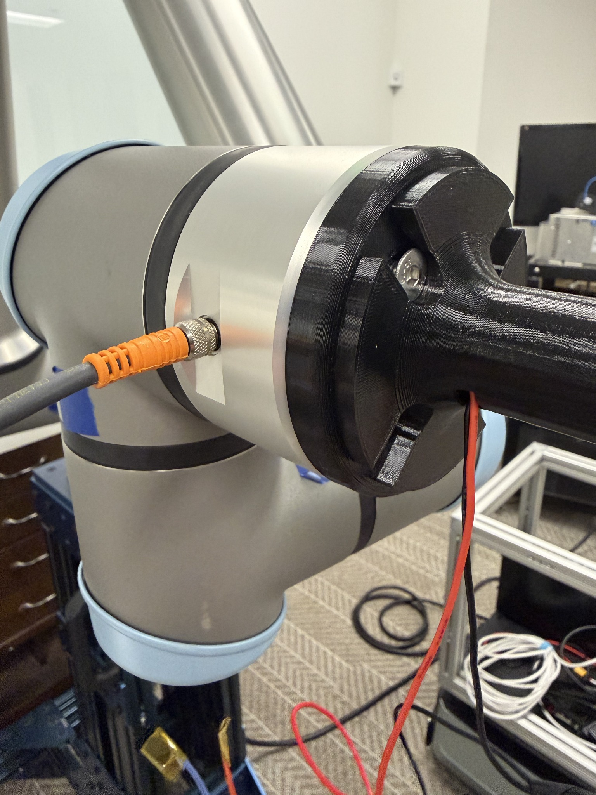
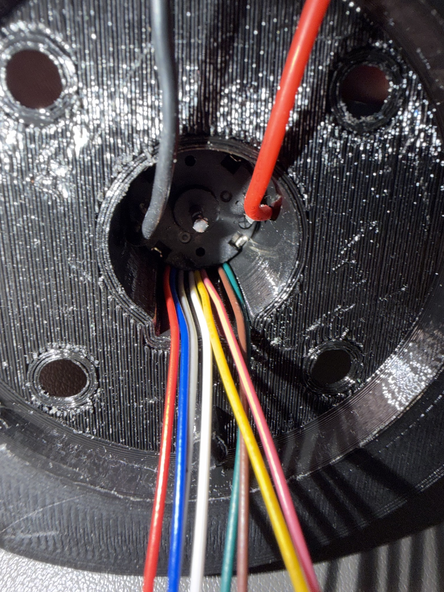

UR10e Motor Mount with M8 Connector.
Designing a compact 3D-printed wrist interface for connector integration and internal wire routing on a robotic cleaning tool.
Goal
Integrate a compact motor/tool interface and an accessible M8 electrical connector at the UR10e wrist.
How I approached it
Model the housing in Fusion 360, create an internal wiring path, print prototypes, and check the assembled fit on the robot.
Result / status
Prototype built and photographed installed on the UR10e; long-term durability and electrical testing are not documented.


Original project documentation including CAD screenshots, engineering drawings, and prototype photographs. Select an image to inspect it at full size.
Explore the full project gallery ↓A compact, serviceable wrist interface.
The robot needed to connect an interchangeable cleaning tool to a UR10e arm while bringing electrical power/signals out to the end effector. My assignment was to design a motor/tool mount that could accommodate an M8 connector without obstructing the wrist interface or creating impractical wire routing.
Design around the real assembly.
The housing had to fit the robot-wrist mounting geometry, provide room for internal conductors, present the connector where it could be reached, and remain straightforward to 3D print and assemble. Clearance for fasteners and nearby parts mattered as much as the overall shape.
From CAD to fit check.
- 01
Built the cylindrical housing and side connector boss in Fusion 360, accounting for the motor interface and fastener positions.
- 02
Developed an internal routing path so the wires could pass through the mount to the M8 connector.
- 03
3D printed and assembled the mount, then installed it on the UR10e wrist to inspect mechanical fit, connector location, and practical cable exit.
An installed prototype.
The photos document an assembled printed mount attached to the UR10e, a close-up of the external connector, and the internal wire routing. That verifies physical integration of the parts shown. The project does not yet include published electrical qualification, fatigue testing, or load measurements.
Mechanical and electrical details interact.
A CAD model that clears the motor still needs space for a connector body, cable bend, fasteners, and assembly access. Building the prototype was an efficient way to check those interfaces before committing to a more permanent design.
Design, prototype, and iterate.
The images below document the development process from CAD and documentation to prototype hardware and integrated assemblies.


